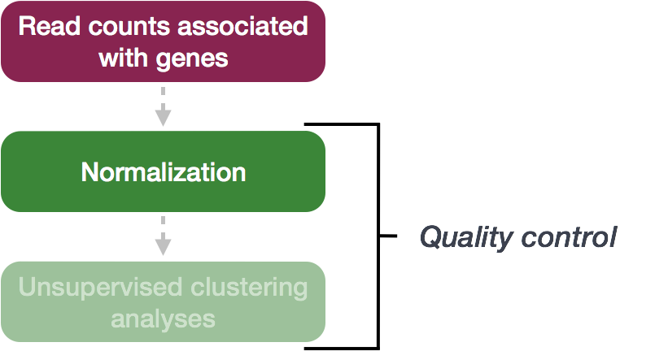
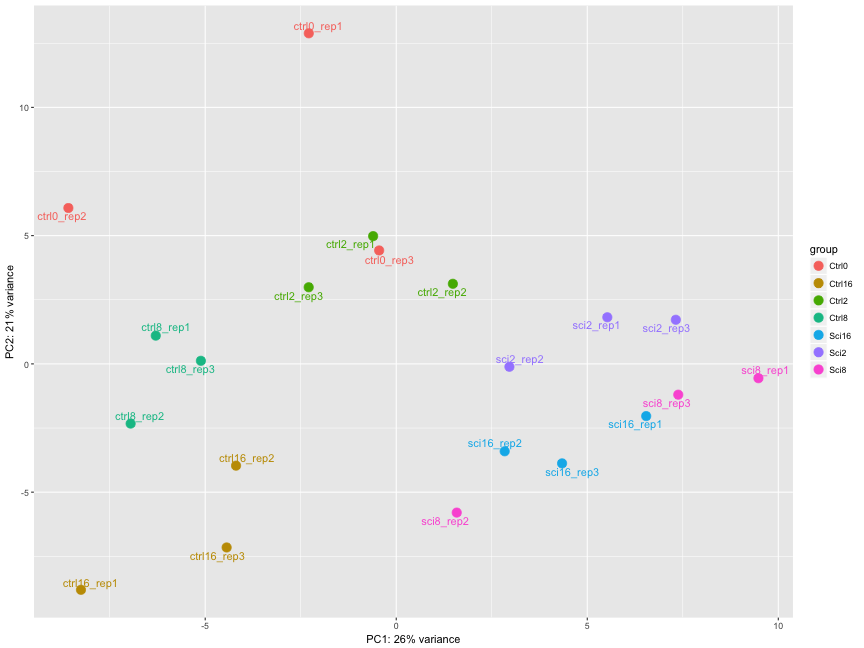
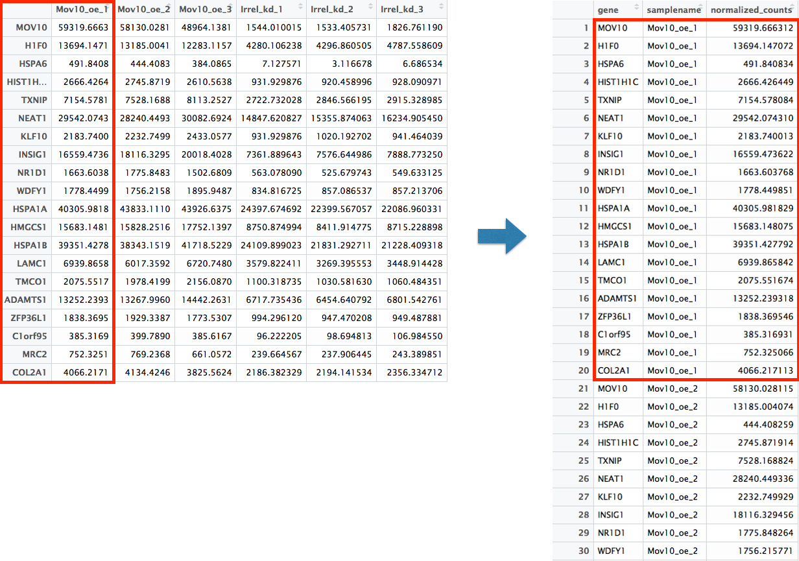

Chapter 9 Codebook
28 total points
9.1 DGE analysis overview
.Rmd file = 01-DGE_setup_and_overview.Rmd
9.1.1 Setting up
9.1.1.1 Loading libraries; technically we don’t need to load all of these libraries because they are in the file setup.R which is sourced in the first .Rmd of the module. However, it’s good practice to load them all at the beginning of your script.
9.1.1.2 Loading data
data <- read.delim("data/Mov10_full_counts.txt", row.names = 1)
meta <- read.delim("data/Mov10_full_meta.txt", row.names = 1)Use class() to inspect our data and make sure we are working with data frames:
## [1] "data.frame"## [1] "data.frame"9.1.1.3 Viewing data
## [1] "Irrel_kd_1" "Irrel_kd_2" "Irrel_kd_3" "Mov10_kd_2" "Mov10_kd_3"
## [6] "Mov10_oe_1" "Mov10_oe_2" "Mov10_oe_3"## [1] "Mov10_kd_2" "Mov10_kd_3" "Mov10_oe_1" "Mov10_oe_2" "Mov10_oe_3"
## [6] "Irrel_kd_1" "Irrel_kd_2" "Irrel_kd_3"| Mov10_kd_2 | Mov10_kd_3 | Mov10_oe_1 | Mov10_oe_2 | |
|---|---|---|---|---|
| 1/2-SBSRNA4 | 57 | 41 | 64 | 55 |
| A1BG | 71 | 40 | 100 | 81 |
| A1BG-AS1 | 256 | 177 | 220 | 189 |
| A1CF | 0 | 1 | 1 | 0 |
You’ll notice that the colnames of the data and the rownames of metadata are the same except that they are in a different order. This is important later as we will be merging the metadata with the data based on these sample names.
9.1.2 DGE analysis workflow
9.1.2.1 RNA-seq count distribution
To determine the appropriate statistical model, we need information about the distribution of counts. To get an idea about how RNA-seq counts are distributed, let’s plot the counts for a single sample, ‘Mov10_oe_1’:
ggplot(data) +
geom_histogram(aes(x = Mov10_oe_1), stat = "bin", bins = 200) +
xlab("Raw expression counts") +
ylab("Number of genes")
If we zoom in close to zero, we can see a large number of genes with counts of zero:
ggplot(data) +
geom_histogram(aes(x = Mov10_oe_1), stat = "bin", bins = 200) +
xlim(-5, 500) +
xlab("Raw expression counts") +
ylab("Number of genes")
These images illustrate some common features of RNA-seq count data, including a low counts associated with a large proportion of genes, and a long right tail due to the lack of any upper limit for expression.
9.1.2.2 Modeling count data
By plotting the mean versus the variance of our data we should be able to see that the variance > mean and therefore it does not fit the Poisson distribution and is better suited to the Negative Binomial (NB) model.
To calculate the mean and variance of our data, we will use the apply function. The apply function allows you to apply a function to the margins (rows or columns) of a matrix. The syntax for apply is as follows: apply(X, MARGIN, FUN), where X is a matrix, MARGIN is the margin of the matrix to apply the function to (1 = rows, 2 = columns), and FUN is the function to apply.
We will use MARGIN = 1 to apply the mean and variance of the counts for each row (gene) across the ‘Mov10 overexpression’ replicates. We will then create a data frame with the mean and variance of the counts for each gene.
mean_counts <- apply(data[, 3:5], 1, mean)
variance_counts <- apply(data[, 3:5], 1, var)
# for ggplot we need the data to be in a data.frame
df <- data.frame(mean_counts, variance_counts)Run the following code to plot the mean versus variance for the ‘Mov10 overexpression’ replicates:
ggplot(df) +
geom_point(aes(x = mean_counts, y = variance_counts)) +
geom_line(aes(x = mean_counts, y = mean_counts, color = "red")) +
scale_y_log10() +
scale_x_log10()
By plotting the mean versus the variance of our data, we can see that the variance is greater than the mean, indicating that the data does not fit the Poisson distribution and is better suited to the Negative Binomial (NB) model.
9.2 Count normalization
.Rmd file = 02-DGE_count_normalization.Rmd
Exercise points +1
Determine the normalized counts for your gene of interest, PD1, given the raw counts and size factors below.
NOTE: You will need to run the code below to generate the raw counts dataframe (PD1) and the size factor vector (size_factors), then use these objects to determine the normalized counts values:
# Raw counts for PD1
PD1 <- c(21, 58, 17, 97, 83, 10)
names(PD1) <- paste0("Sample", 1:6)
PD1 <- data.frame(PD1)
PD1 <- t(PD1)
# Size factors for each sample
size_factors <- c(1.32, 0.70, 1.04, 1.27, 1.11, 0.85)Now that we know the theory of count normalization, we will normalize the counts for the Mov10 dataset using DESeq2. This requires a few steps:
- Ensure the row names of the metadata dataframe are present and in the same order as the column names of the counts dataframe.
- Create a
DESeqDataSetobject - Generate the normalized counts
9.2.1 1. Match the metadata and counts data
We should always make sure that we have sample names that match between the two files, and that the samples are in the right order. DESeq2 will output an error if this is not the case.
## [1] TRUE## [1] FALSEThe colnames of our data don’t match the rownames of our metadata so we need to reorder them. We can use the match function:
idx <- match(rownames(meta),colnames(data))
data <- data[,idx]
all(colnames(data) == rownames(meta))## [1] TRUEExercise points = +2
Suppose we had sample names matching in the counts matrix and metadata file, but they were out of order. Write the line(s) of code required to create a new matrix with columns ordered such that they were identical to the row names of the metadata.
9.2.2 2. Create DESEq2 object
Bioconductor software packages often define and use a custom class within R for storing data (input data, intermediate data and also result data). These custom data structures are similar to lists in that they can contain multiple different data types/structures within them. But, unlike lists they have pre-specified data slots, which hold specific types/classes of data. The data stored in these pre-specified slots can be accessed by using specific package-defined functions.
Let’s start by creating the DESeqDataSet object and then we can talk a bit more about what is stored inside it. To create the object we will need the count matrix and the metadata table as input. We will also need to specify a design formula. The design formula specifies the column(s) in the metadata table and how they should be used in the analysis. For our dataset we only have one column we are interested in, that is ~sampletype. This column has three factor levels, which tells DESeq2 that for each gene we want to evaluate gene expression change with respect to these different levels.
## Create DESeq2Dataset object
dds <- DESeqDataSetFromMatrix(countData = data, colData = meta, design = ~ sampletype)You can use DESeq2-specific functions to access the different slots and retrieve information, if you wish. For example, suppose we wanted the original count matrix we would use counts():
## Irrel_kd_1 Irrel_kd_2 Irrel_kd_3 Mov10_kd_2 Mov10_kd_3
## 1/2-SBSRNA4 45 31 39 57 41
## A1BG 77 58 40 71 40
## A1BG-AS1 213 172 126 256 177
## A1CF 0 0 0 0 1
## A2LD1 91 80 50 146 81
## A2M 9 8 4 10 9As we go through the workflow we will use the relevant functions to check what information gets stored inside our object. We can also run:
## [1] "design" "dispersionFunction" "rowRanges"
## [4] "colData" "assays" "NAMES"
## [7] "elementMetadata" "metadata"9.2.3 3. Generate the Mov10 normalized counts
The next step is to normalize the count data in order to be able to make fair gene comparisons between samples.

To perform the median of ratios method of normalization, DESeq2 has a single estimateSizeFactors() function that will generate size factors for us. We will use the function in the example below, but in a typical RNA-seq analysis this step is automatically performed by the DESeq() function, which we will see later.
By assigning the results back to the dds object we are filling in the slots of the DESeqDataSet object with the appropriate information. We can take a look at the normalization factor applied to each sample using:
## Irrel_kd_1 Irrel_kd_2 Irrel_kd_3 Mov10_kd_2 Mov10_kd_3 Mov10_oe_1
## 1.1224020 0.9625632 0.7477715 1.5646728 0.9351760 1.2016082
## Mov10_oe_2 Mov10_oe_3
## 1.1205912 0.6534987Now, to retrieve the normalized counts matrix from dds, we use the counts() function and add the argument normalized=TRUE.
We can save this normalized data matrix to file for later use:
9.3 Quality Control
.Rmd file = 03-DGE_QC_analysis.Rmd
Exercise points = +5
The figure below was generated from a time course experiment with sample groups ‘Ctrl’ and ‘Sci’ and the following timepoints: 0h, 2h, 8h, and 16h.

Determine the sources explaining the variation represented by PC1 and PC2.
- Ans:
Do the sample groups separate well?
- Ans:
Do the replicates cluster together for each sample group?
- Ans:
Are there any outliers in the data?
- Ans:
Should we have any other concerns regarding the samples in the dataset?
- Ans:
Example of Variance Stabilization Raw RNA-Seq count data has different levels of variability:
Without stabilization: Lowly expressed genes show high variability between samples (often due to noise), and highly expressed genes show less variability. With stabilization (e.g., rlog or vst): Variance across genes is more evenly distributed, which makes the data easier to work with in analyses like clustering or PCA.
The rlog transformation of the normalized counts is only necessary for these visualization methods during this quality assessment.
The blind=TRUE argument results in a transformation unbiased to sample condition information. When performing quality assessment, it is important to include this option. The DESeq2 vignette has more details.
The rlog function returns a DESeqTransform object, another type of DESeq-specific object. The reason you don’t just get a matrix of transformed values is because all of the parameters (i.e. size factors) that went into computing the rlog transform are stored in that object. We use this object to plot the PCA and heirarchical clustering figures for quality assessment.
9.3.1 Principal components analysis (PCA)
DESeq2 has a built-in function for plotting PCA plots, that uses ggplot2 under the hood. This is great because it saves us having to type out lines of code and having to fiddle with the different ggplot2 layers. In addition, it takes the rlog object as an input directly, hence saving us the trouble of extracting the relevant information from it.
The function plotPCA() requires two arguments as input: an rlog object and the intgroup (the column in our metadata that we are interested in).

What does this plot tell you about the similarity of samples? Does it fit the expectation from the experimental design? By default the function uses the top 500 most variable genes. You can change this by adding the ntop argument and specifying how many genes you want to use to draw the plot.
9.3.2 Hierarchical Clustering
Since there is no built-in function for heatmaps in DESeq2 we will be using the pheatmap() function from the pheatmap package. This function requires a matrix/dataframe of numeric values as input, and so the first thing we need to is retrieve that information from the rld object:
### Extract the rlog matrix from the object
rld_mat <- assay(rld) ## assay() is function from the "SummarizedExperiment" package that was loaded when you loaded DESeq2Then we need to compute the pairwise correlation values for samples. We can do this using the cor() function:
### Compute pairwise correlation values
rld_cor <- cor(rld_mat) ## cor() is a base R function
head(rld_cor) ## check the output of cor(), make note of the rownames and colnames## Irrel_kd_1 Irrel_kd_2 Irrel_kd_3 Mov10_kd_2 Mov10_kd_3
## Irrel_kd_1 1.0000000 0.9999614 0.9999532 0.9997202 0.9997748
## Irrel_kd_2 0.9999614 1.0000000 0.9999544 0.9996918 0.9997568
## Irrel_kd_3 0.9999532 0.9999544 1.0000000 0.9996816 0.9997574
## Mov10_kd_2 0.9997202 0.9996918 0.9996816 1.0000000 0.9999492
## Mov10_kd_3 0.9997748 0.9997568 0.9997574 0.9999492 1.0000000
## Mov10_oe_1 0.9996700 0.9996984 0.9997067 0.9994868 0.9996154
## Mov10_oe_1 Mov10_oe_2 Mov10_oe_3
## Irrel_kd_1 0.9996700 0.9996599 0.9995804
## Irrel_kd_2 0.9996984 0.9996825 0.9996227
## Irrel_kd_3 0.9997067 0.9997090 0.9996026
## Mov10_kd_2 0.9994868 0.9994565 0.9993869
## Mov10_kd_3 0.9996154 0.9995905 0.9995235
## Mov10_oe_1 1.0000000 0.9999505 0.9999196And now to plot the correlation values as a heatmap:
Overall, we observe pretty high correlations across the board ( > 0.999) suggesting no outlying sample(s). Also, similar to the PCA plot you see the samples clustering together by sample group. Together, these plots suggest to us that the data are of good quality and we have the green light to proceed to differential expression analysis.
Exercise points = +3
The pheatmap function has a number of different arguments that we can alter from default values to enhance the aesthetics of the plot. Try adding the arguments color, border_color, fontsize_row, fontsize_col, show_rownames and show_colnames to your pheatmap. How does your plot change. Take a look through the help pages (?pheatmap) and identify what each of the added arguments is contributing to the plot.

9.4 DGE analysis workflow
.Rmd file = 04_DGE_DESeq2_analysis.Rmd
9.4.1 Set the Design Formula
The main purpose of the design formula in DESeq2 is to specify the factors that are influencing gene expression so that their effects can be accounted for or controlled during the analysis. This allows DESeq2 to isolate the effect of the variable you’re primarily interested in while adjusting for other known sources of variation. The design formula should have all of the factors in your metadata that account for major sources of variation in your data. The last factor entered in the formula should be the condition of interest.
For example:
## ~sampletypeThis shows that sampletype is the condition of interest and as such is the only covariate. DESeq2 will test for differential expression between the two sample types, adjusting for any other variation.
Exercise points = +3
- Suppose you wanted to study the expression differences between the two age groups in the metadata shown above, and major sources of variation were
sexandtreatment, how would the design formula be written?
# the default behavior of `results` is to return the comparison of the last group in the design formula, so your condition of interest should come last:- Based on our Mov10 metadata dataframe, which factors could we include in our design formula?
- Ans:
- What would you do if you wanted to include a factor in your design formula that is not in your metadata?
- Ans:
9.4.2 MOV10 Differential Expression Analysis
Running Differential Expression in Two Lines of Code
To obtain differential expression results from our raw count data, we only need to run two lines of code!
First, we create a DESeqDataSet, as we did in the ‘Count normalization’ lesson, specifying the location of our raw counts and metadata, and applying our design formula:
## Create DESeq object
dds <- DESeqDataSetFromMatrix(countData = data, colData = meta, design = ~ sampletype)Next, we run the actual differential expression analysis with a single call to the DESeq() function. This function handles everything—from normalization to linear modeling—all in one step. During execution, DESeq2 will print messages detailing the steps being performed: estimating size factors, estimating dispersions, gene-wise dispersion estimates, modeling the mean-dispersion relationship, and statistical testing for differential expression.
## estimating size factors## estimating dispersions## gene-wise dispersion estimates## mean-dispersion relationship## final dispersion estimates## fitting model and testingBy re-assigning the result to back to the same variable name (dds), we update our DESeqDataSet object, which will now contain the results of each step in the analysis, effectively filling in the slots of our DESeqDataSet object.
9.4.3 DESeq2 differential gene expression analysis workflow
Everything from normalization to linear modeling was carried out by the use of a single function!
With the 2 lines of code above, we just completed the workflow for the differential gene expression analysis with DESeq2. The steps in the analysis are output below:

9.4.3.1 Step 1: Estimate size factors
MOV10 DE analysis: examining the size factors
## Irrel_kd_1 Irrel_kd_2 Irrel_kd_3 Mov10_kd_2 Mov10_kd_3 Mov10_oe_1
## 1.1224020 0.9625632 0.7477715 1.5646728 0.9351760 1.2016082
## Mov10_oe_2 Mov10_oe_3
## 1.1205912 0.6534987Take a look at the total number of reads for each sample:
## Irrel_kd_1 Irrel_kd_2 Irrel_kd_3 Mov10_kd_2 Mov10_kd_3 Mov10_oe_1
## 22687366 19381680 14962754 32826936 19360003 23447317
## Mov10_oe_2 Mov10_oe_3
## 21713289 12737889How do the numbers correlate with the size factor?
- Ans:
9.4.4 MOV10 Differential Expression Analysis: Exploring Dispersion Estimates
Now, let’s explore the dispersion estimates for the MOV10 dataset:

**Since we have a small sample size, for many genes we see quite a bit of shrinkage.
Exercise points = +1
Do you think our data are a good fit for the model?
- Ans:
9.5 Negative Binomial model fitting
.Rmd file = 05_DGE_DESeq2_analysis2.Rmd
- Estimate the Beta Coefficients: “DESeq2 estimates the beta coefficients by fitting a negative binomial GLM to the data using Maximum Likelihood Estimation (MLE). DESeq2 substitutes the mean (\(\mu_{ij}\)) with \(2^{\beta_i X_j}\) in the negative binomial model, using MLE to predict expected counts based on experimental covariates and estimate gene expression changes while controlling for design factors.
The model is fit using the DESeq() function in R, which carries out the entire estimation process:
## using pre-existing size factors## estimating dispersions## found already estimated dispersions, replacing these## gene-wise dispersion estimates## mean-dispersion relationship## final dispersion estimates## fitting model and testing- Extract the Beta Coefficients:
Once the model is fitted, the estimated beta coefficients (log2 fold changes) for each gene can be extracted using the
coef()function:
This gives a matrix of estimated beta coefficients, where each row corresponds to a gene and each column corresponds to a covariate in the design matrix.
9.5.1 Example:
For example, if the design matrix includes an intercept (control) and two conditions (MOV10 knockdown and MOV10 overexpression), the beta coefficients \(\beta_i\) for gene \(i\) would represent:
\(\beta_{i1}\): the log2 fold change for the control group (intercept)
\(\beta_{i2}\): the log2 fold change for the MOV10 knockdown group
\(\beta_{i3}\): the log2 fold change for the MOV10 overexpression group.
9.5.2 Calculation:
To calculate the fitted (expected) log2 counts for gene \(i\) in sample \(j\), you can take the dot product of the row of the design matrix \(X_j\) for that sample and the beta coefficients \(\beta_i\) for that gene:
\[ \log_2(\mu_{ij}) = \beta_i X_j = \beta_{i1} X_{j1} + \beta_{i2} X_{j2} + \dots + \beta_{iP} X_{jP} \]
Where:
- \(P\) is the number of covariates in the design matrix
The expected mean \(\mu_{ij}\) on the original count scale is obtained by exponentiating the log2-scale fitted values:
\[ \mu_{ij} = 2^{\beta_i X_j} \]
Exercise points = +1
In the DESeq2 workflow, what is the purpose of the design matrix in the context of fitting the Negative Binomial model for each gene?
- Ans:
9.5.3 Matrix Multiplication Form:
If you want to calculate the fitted values for all genes and samples at once, you can express the model as a matrix multiplication:
\[ \log_2(\mu) = \beta X^T \]
This computes the expected log2 counts for all genes across all samples.
In R, you can calculate the fitted log2 counts for all genes and samples using:
This step multiplies the beta coefficients matrix by the transpose of the design matrix to compute the fitted log2 counts.
STOP Tues Oct 22
9.6 MOV10 Differential Expression Analysis:
Control versus Overexpression
Building the Results Table
To build the results table, we use the results() function. You can specify the contrast to be tested using the contrast argument. In this example, we’ll save the unshrunken and shrunken results of Control vs. Mov10 overexpression to different variables. We’ll also set the alpha to 0.05, which is more stringent than the default value of 0.1.
# define contrasts
contrast_oe <- c("sampletype",
"MOV10_overexpression",
"control")
# extract results table
res_tableOE_unshrunken <- results(dds,
contrast = contrast_oe,
alpha = 0.05)
resultsNames(dds)## [1] "Intercept"
## [2] "sampletype_MOV10_knockdown_vs_control"
## [3] "sampletype_MOV10_overexpression_vs_control"# shrink log2 fold changes
res_tableOE <- lfcShrink(dds = dds,
coef = "sampletype_MOV10_overexpression_vs_control",
res = res_tableOE_unshrunken)## using 'apeglm' for LFC shrinkage. If used in published research, please cite:
## Zhu, A., Ibrahim, J.G., Love, M.I. (2018) Heavy-tailed prior distributions for
## sequence count data: removing the noise and preserving large differences.
## Bioinformatics. https://doi.org/10.1093/bioinformatics/bty895MA Plot
A MA plot visualizes the relationship between the mean expression (on the x-axis) and the log2 fold change (on the y-axis) for all genes in a dataset. Genes that are significantly differentially expressed are highlighted, while most other genes cluster around zero log2 fold change.
When shrinkage is applied, as in DESeq2, large log2 fold change estimates for genes with low counts or high variability are pulled toward more moderate values, reducing the noise in the plot. This helps focus attention on the more reliable fold changes and makes the plot cleaner, especially for low-expression genes that tend to have more variable LFC estimates without shrinkage.
This plot is also a great way to illustrate the effect of LFC shrinkage. DESeq2 provides a simple function to generate an MA plot.
Shrunken & Unshrunken Results:
par(mfrow = c(1,2))
plotMA(res_tableOE_unshrunken, ylim=c(-2,2))
abline(v = 10,col="red",lwd = 2)
# Shrunken results:
plotMA(res_tableOE, ylim=c(-2,2))
abline(v = 10,col="red",lwd = 2)
MOV10 DE Analysis: Exploring the Results
The results table in DESeq2 looks similar to a data.frame and can be treated like one for accessing or subsetting data. However, it is stored as a DESeqResults object, which is important to keep in mind when working with visualization tools.
## [1] "DESeqResults"
## attr(,"package")
## [1] "DESeq2"Let’s go through some of the columns in the results table to get a better idea of what we are looking at. To extract information regarding the meaning of each column we can use mcols():
## DataFrame with 5 rows and 2 columns
## type description
## <character> <character>
## baseMean intermediate mean of normalized c..
## log2FoldChange results log2 fold change (MA..
## lfcSE results posterior SD: sample..
## pvalue results Wald test p-value: s..
## padj results BH adjusted p-valuesNow let’s take a look at what information is stored in the results:
## log2 fold change (MAP): sampletype MOV10_overexpression vs control
## Wald test p-value: sampletype MOV10 overexpression vs control
## DataFrame with 6 rows and 5 columns
## baseMean log2FoldChange lfcSE pvalue padj
## <numeric> <numeric> <numeric> <numeric> <numeric>
## 1/2-SBSRNA4 45.652040 0.16858121 0.209275 0.1610752 0.2655661
## A1BG 61.093102 0.13623770 0.176713 0.2401909 0.3603094
## A1BG-AS1 175.665807 -0.04016953 0.116916 0.6789312 0.7748342
## A1CF 0.237692 0.00626568 0.210057 0.7945932 NA
## A2LD1 89.617985 0.29007260 0.195380 0.0333343 0.0741149
## A2M 5.860084 -0.09623512 0.233587 0.1057823 0.1900466## [1] "baseMean" "log2FoldChange" "lfcSE" "pvalue"
## [5] "padj"9.6.1 MOV10 DE Analysis: Control vs. Knockdown
After examining the overexpression results, let’s move on to the comparison between Control vs. Knockdown. We’ll use contrasts in the results() function to extract the results table and store it in the res_tableKD variable. You can also use coef to specify the contrast directly in the lfcShrink() function.
# define contrast
contrast_kd <- c("sampletype",
"MOV10_knockdown",
"control")
# extract results table
res_tableKD_unshrunken <- results(dds,
contrast = contrast_kd,
alpha = 0.05)
resultsNames(dds)## [1] "Intercept"
## [2] "sampletype_MOV10_knockdown_vs_control"
## [3] "sampletype_MOV10_overexpression_vs_control"# use the `coef` argument to specify the contrast directly
res_tableKD <- lfcShrink(dds, coef = 2,
res = res_tableKD_unshrunken)## using 'apeglm' for LFC shrinkage. If used in published research, please cite:
## Zhu, A., Ibrahim, J.G., Love, M.I. (2018) Heavy-tailed prior distributions for
## sequence count data: removing the noise and preserving large differences.
## Bioinformatics. https://doi.org/10.1093/bioinformatics/bty8959.7 Summarizing Results
To summarize the results, DESeq2 offers the summary() function, which conveniently reports the number of genes that are significantly differentially expressed at a specified threshold (default FDR < 0.05). Note that, even though the output refers to p-values, it actually summarizes the results using adjusted p-values (padj/FDR).
Let’s start by summarizing the results for the OE vs. control comparison:
##
## out of 19748 with nonzero total read count
## adjusted p-value < 0.05
## LFC > 0 (up) : 3103, 16%
## LFC < 0 (down) : 3408, 17%
## outliers [1] : 0, 0%
## low counts [2] : 4171, 21%
## (mean count < 5)
## [1] see 'cooksCutoff' argument of ?results
## [2] see 'independentFiltering' argument of ?resultsIn addition to reporting the number of up- and down-regulated genes at the default significance threshold, this function also provides information on:
- Number of genes tested (genes with non-zero total read count)
- Number of genes excluded from multiple test correction due to low mean counts
9.7.1 Extracting Significant Differentially Expressed Genes
In some cases, using only the FDR threshold doesn’t sufficiently reduce the number of significant genes, making it difficult to extract biologically meaningful results. To increase stringency, we can apply an additional fold change threshold.
Although the summary() function doesn’t include an argument for fold change thresholds, we can define our own criteria.
Let’s start by setting the thresholds for both adjusted p-value (FDR < 0.05) and log2 fold change (|log2FC| > 0.58, corresponding to a 1.5-fold change):
Next, we’ll convert the results table to a tibble for easier subsetting:
Now, we can filter the table to retain only the genes that meet the significance and fold change criteria:
sigOE <- res_tableOE_tb %>%
dplyr::filter(padj < padj.cutoff &
abs(log2FoldChange) > lfc.cutoff)
# Save the results for future use
saveRDS(sigOE,"data/sigOE.RDS")Exercise points = +2
How many genes are differentially expressed in the Overexpression vs. Control comparison based on the criteria we just defined? Does this reduce the number of significant genes compared to using only the FDR threshold?
Does this reduce our results?
9.7.2 MOV10 Knockdown Analysis: Control vs. Knockdown
Next, let’s perform the same analysis for the Control vs. Mov10 knockdown comparison. We’ll use the same thresholds for adjusted p-value (FDR < 0.05) and log2 fold change (|log2FC| > 0.58).
res_tableKD_tb <- res_tableKD %>%
data.frame() %>%
rownames_to_column(var = "gene") %>%
as_tibble()
sigKD <- res_tableKD_tb %>%
dplyr::filter(padj < padj.cutoff &
abs(log2FoldChange) > lfc.cutoff)
# We'll save this object for use in the homework
saveRDS(sigKD,"data/sigKD.RDS")How many genes are differentially expressed in the Knockdown compared to Control?
9.8 Visualizing RNA-seq results
.Rmd file = 06_DGE_visualizing_results.Rmd
Let’s start by loading a few libraries (if not already loaded):
# load libraries
library(tidyverse)
library(ggplot2)
library(ggrepel)
library(RColorBrewer)
library(DESeq2)
library(pheatmap)
library(dplyr)When we are working with large amounts of data it can be useful to display that information graphically to gain more insight.
Let’s create tibble objects from the meta and normalized_counts data frames before we start plotting. This will enable us to use the tidyverse functionality more easily.
# Read in the metadata
meta <- read.table("data/Mov10_full_meta.txt",
header=T, row.names=1)
# Create a tibble for meta data
mov10_meta <- meta %>%
rownames_to_column(var="samplename") %>%
as_tibble()
# read in the normalized counts
normalized_counts <- read.delim("data/normalized_counts.txt", row.names=1)
all(mov10_meta$samplename == colnames(normalized_counts))## [1] TRUE# Create a tibble for normalized_counts
normalized_counts <- normalized_counts %>%
data.frame() %>%
rownames_to_column(var="gene") %>%
as_tibble()One way to visualize results would be to simply plot the expression data for a handful of genes. We could do that by picking out specific genes of interest or selecting a range of genes.
9.8.0.1 Using DESeq2 plotCounts() to plot expression of a single gene
To pick out a specific gene of interest to plot, for example Mov10, we can use the plotCounts() from DESeq2. plotCounts() is a function that allows us to plot the normalized counts for a single gene across all samples.

# We can also color the points by sample type
sampletype = as.factor(mov10_meta$sampletype)
library(RColorBrewer)
display.brewer.all()
col = brewer.pal(8,"Dark2")
palette(col)
plotCounts(dds, gene="MOV10",
intgroup="sampletype",
col = as.numeric(sampletype),
pch = 19) 
This function only allows for plotting the counts of a single gene at a time.
9.8.0.2 Using ggplot2 to plot expression of a single gene
We can also use ggplot2 to plot the MOV10 counts. We can save the output of plotCounts() to a variable specifying the returnData=TRUE argument. This will save the normalized counts for the gene MOV10 to a data frame object. We can then use ggplot2 to plot the normalized counts for MOV10 across all samples.
# Save `plotCounts()` to a data frame object
d <- plotCounts(dds, gene = "MOV10", intgroup = "sampletype",
returnData=TRUE)
# Plot using ggplot2
ggplot(d, aes(x = sampletype, y = count, color = sampletype)) +
geom_point(position = position_jitter(w = 0.1,h = 0)) +
geom_text_repel(aes(label = rownames(d))) +
theme_bw() +
ggtitle("MOV10") +
theme(plot.title = element_text(hjust = 0.5))
Note that in the plot below (code above), we are using
geom_text_repel()from theggrepelpackage to label our individual points on the plot.
9.8.0.3 Using ggplot2 to plot multiple genes (e.g. top 20)
Often it is helpful to check the expression of multiple genes of interest at the same time. This often first requires some data wrangling.
We are going to plot the normalized count values for the top 20 differentially expressed genes (by padj values).
To do this, we first need to determine the gene names of our top 20 genes by ordering our results and extracting the top 20 genes (by padj values):
res_tableOE <- readRDS("data/res_tableOE.RDS")
res_tableOE_tb <- res_tableOE %>%
data.frame() %>%
rownames_to_column(var="gene") %>%
as_tibble()
## Order results by padj values
top20_sigOE_genes <- res_tableOE_tb %>%
arrange(padj) %>%
#Arrange rows by padj values
pull(gene) %>%
#Extract character vector of ordered genes
head(n=20)
#Extract the first 20 genesThen, we can extract the normalized count values for these top 20 genes:
## Normalized counts for top 20 significant genes
top20_sigOE_norm <- normalized_counts %>%
filter(gene %in% top20_sigOE_genes)Now that we have the normalized counts for each of the top 20 genes for all 8 samples, to plot using ggplot(), we need to pivot_longer top20_sigOE_norm from a wide format to a long format so the counts for all samples will be in a single column to allow us to give ggplot the one column with the values we want it to plot.
The pivot_longer() function in the tidyr package will perform this operation and will output the normalized counts for all genes for Mov10_oe_1 listed in the first 20 rows, followed by the normalized counts for Mov10_oe_2 in the next 20 rows, so on and so forth.

# Pivot the data frame
pivoted_top20_sigOE <- top20_sigOE_norm %>%
pivot_longer(colnames(top20_sigOE_norm)[2:9],
names_to = "samplename",
values_to = "normalized_counts")
## Check the column header in the "pivoted" data frame
head(pivoted_top20_sigOE)| gene | samplename | normalized_counts |
|---|---|---|
| ADAMTS1 | Irrel_kd_1 | 6717.735 |
| ADAMTS1 | Irrel_kd_2 | 6454.641 |
| ADAMTS1 | Irrel_kd_3 | 6801.543 |
| ADAMTS1 | Mov10_kd_2 | 6869.168 |
| ADAMTS1 | Mov10_kd_3 | 8730.977 |
| ADAMTS1 | Mov10_oe_1 | 13252.239 |
Now, if we want our counts colored by sample group, then we need to combine the metadata information with the melted normalized counts data into the same data frame for input to ggplot():
inner_join(x,y) will merge 2 data frames by the colname in x that matches a column name in y in this case samplename column.
## Joining with `by = join_by(samplename)`Now that we have a data frame in a format that can be utilised by ggplot easily, let’s plot!
## plot using ggplot2
ggplot(pivoted_top20_sigOE) +
geom_point(aes(x = gene, y = normalized_counts,
color = sampletype)) +
scale_y_log10() +
xlab("Genes") +
ylab("log10 Normalized Counts") +
ggtitle("Top 20 Significant DE Genes") +
theme_bw() +
theme(axis.text.x = element_text(angle = 45,
hjust = 1)) +
theme(plot.title = element_text(hjust = 0.5))
9.8.1 Heatmap
We will plot a heatmap of the sigOE genes to visualize their expression across all samples using pheatmap().
sigOE = readRDS("data/sigOE.RDS")
norm_OEsig <- normalized_counts[,c(1,2:4,7:9)] %>%
filter(gene %in% sigOE$gene) %>%
data.frame() %>%
column_to_rownames(var = "gene") Now let’s draw the heatmap using pheatmap. We can also add annotations to the heatmap to indicate the sample type. The annotation_col argument in pheatmap()requires a data frame with the same row names as the column names of the matrix used to generate the heatmap.
### Annotate our heatmap (optional)
annotation <- mov10_meta %>%
filter(samplename %in% colnames(norm_OEsig)) %>%
dplyr::select(samplename, sampletype) %>%
data.frame(row.names = "samplename")
annotation$sampletype = factor(annotation$sampletype)
### Set a color palette
heat_colors <- brewer.pal(6, "YlOrRd")
### Set annotation colors
ann_colors = list(
sampletype = c(control="navy",
MOV10_overexpression= "green"))
### Run pheatmap
pheatmap(norm_OEsig,
annotation_colors = ann_colors,
color = heat_colors,
cluster_rows = T,
show_rownames = F,
annotation_col = annotation,
border_color = NA,
fontsize = 12,
scale = "row",
fontsize_col = 12)NOTE: There are several additional arguments we have included in the function for aesthetics. One important one is
scale="row", in which Z-scores are plotted, rather than the actual normalized count value.
9.8.2 Volcano plots
A commonly used plot in RNA-seq analysis is the volcano plot. in which you have the log transformed adjusted p-values plotted on the y-axis and log2 fold change values on the x-axis.
To generate a volcano plot, we first need to have a column in our results data indicating whether or not the gene is considered differentially expressed based on p-adjusted values.
## create a column for thresholding in the results table
res_tableOE_tb <- res_tableOE_tb %>%
mutate(threshold_OE = padj < 0.05 &
abs(log2FoldChange) >= 0.58)Now we can start plotting. The geom_point object is most applicable, as this is essentially a scatter plot:
ggplot(res_tableOE_tb) +
geom_point(aes(x = log2FoldChange,
y = -log10(padj), colour = threshold_OE)) +
ggtitle("Mov10 overexpression") +
xlab("log2 fold change") +
ylab("-log10 adjusted p-value") +
theme_bw() +
theme(legend.position = "none",
plot.title = element_text(size = rel(1.5),
hjust = 0.5),
axis.title = element_text(size = rel(1.25))) 
What if we also wanted to know where the top 10 genes (lowest padj) in our DE list are located on this plot? We could label those dots with the gene name on the Volcano plot using geom_text_repel().
First, we need to order the res_tableOE tibble by padj, and add an additional column to it, to include on those gene names we want to use to label the plot.
## Create a column to indicate which genes to label
res_tableOE_tb <- res_tableOE_tb %>%
arrange(padj) %>%
mutate(genelabels = "")
res_tableOE_tb$genelabels[1:10] <- res_tableOE_tb$gene[1:10]
head(res_tableOE_tb)| gene | baseMean | log2FoldChange | lfcSE | pvalue | padj | threshold_OE | genelabels |
|---|---|---|---|---|---|---|---|
| MOV10 | 21681.800 | 5.0833015 | 0.1100637 | 0 | 0 | TRUE | MOV10 |
| H1F0 | 7881.081 | 1.5488442 | 0.0565866 | 0 | 0 | TRUE | H1F0 |
| HIST1H1C | 1741.383 | 1.5234178 | 0.0706100 | 0 | 0 | TRUE | HIST1H1C |
| TXNIP | 5133.749 | 1.4237003 | 0.0697011 | 0 | 0 | TRUE | TXNIP |
| NEAT1 | 21973.706 | 0.9164119 | 0.0466768 | 0 | 0 | TRUE | NEAT1 |
| KLF10 | 1694.211 | 1.2330697 | 0.0651906 | 0 | 0 | TRUE | KLF10 |
Next, we plot it as before with an additiona layer for geom_text_repel() wherein we can specify the column of gene labels we just created.
ggplot(res_tableOE_tb, aes(x = log2FoldChange,
y = -log10(padj))) +
geom_point(aes(colour = threshold_OE)) +
geom_text_repel(aes(label = genelabels)) +
ggtitle("Mov10 overexpression") +
xlab("log2 fold change") +
ylab("-log10 adjusted p-value") +
theme_bw() +
theme(legend.position = "none",
plot.title = element_text(size = rel(1.5),
hjust = 0.5),
axis.title = element_text(size = rel(1.25))) 
9.9 Summary of DGE workflow
.Rmd file = 07-DGE_summarizing_workflow.Rmd
We have detailed the various steps in a differential expression analysis workflow, providing theory with example code. To provide a more succinct reference for the code needed to run a DGE analysis, we have summarized the steps in an analysis below:
9.9.2 2. Exploratory data analysis (PCA & heirarchical clustering) - identifying outliers and sources of variation in the data:
9.9.3 3. Run DESeq2:
# **Optional step** - Re-create DESeq2 dataset if the design formula has changed after QC analysis in include other sources of variation
dds <- DESeqDataSetFromMatrix(countData = raw_counts,
colData = metadata, design = ~ condition)
# Run DESeq2 differential expression analysis
dds <- DESeq(dds)
# Output normalized counts to save as a file to access outside RStudio
normalized_counts <- counts(dds, normalized = TRUE)
write.table(normalized_counts, file = "data/normalized_counts.txt",
sep = "\t", quote = F, col.names = NA)9.9.5 5. Create contrasts to perform Wald testing on the shrunken log2 foldchanges between specific conditions:
9.9.6 6. Output significant results:
### Set thresholds
padj.cutoff <- 0.05
lfc.cutoff <- 0.58 ## change in expression of 1.5
# Turn the results object into a data frame
res_df <- res %>%
data.frame() %>%
rownames_to_column(var = "gene")
# Subset the significant results
sig_res <- dplyr::filter(res_df,
padj < padj.cutoff &
abs(log2FoldChange) > lfc.cutoff)9.9.8 8. Make sure to output the versions of all tools used in the DE analysis:
## R version 4.2.3 (2023-03-15)
## Platform: x86_64-apple-darwin17.0 (64-bit)
## Running under: macOS 14.6.1
##
## Matrix products: default
## LAPACK: /Library/Frameworks/R.framework/Versions/4.2/Resources/lib/libRlapack.dylib
##
## locale:
## [1] en_US.UTF-8/en_US.UTF-8/en_US.UTF-8/C/en_US.UTF-8/en_US.UTF-8
##
## attached base packages:
## [1] stats4 stats graphics grDevices utils datasets
## [7] methods base
##
## other attached packages:
## [1] ggraph_2.2.1 igraph_2.1.1
## [3] visNetwork_2.1.2 GOSemSim_2.24.0
## [5] rmarkdown_2.29 org.Hs.eg.db_3.16.0
## [7] clusterProfiler_4.6.2 enrichplot_1.18.4
## [9] fgsea_1.24.0 GO.db_3.16.0
## [11] AnnotationDbi_1.60.2 GOenrichment_0.5.0
## [13] ggrepel_0.9.6 gplots_3.2.0
## [15] lubridate_1.9.3 forcats_1.0.0
## [17] stringr_1.5.1 dplyr_1.1.4
## [19] purrr_1.0.2 readr_2.1.5
## [21] tidyr_1.3.1 tibble_3.2.1
## [23] ggplot2_3.5.1 tidyverse_2.0.0
## [25] RColorBrewer_1.1-3 DESeq2_1.38.3
## [27] SummarizedExperiment_1.28.0 Biobase_2.58.0
## [29] MatrixGenerics_1.10.0 matrixStats_1.4.1
## [31] GenomicRanges_1.50.2 GenomeInfoDb_1.34.9
## [33] IRanges_2.32.0 S4Vectors_0.36.2
## [35] BiocGenerics_0.44.0 bookdown_0.41
## [37] pheatmap_1.0.12 knitr_1.49
##
## loaded via a namespace (and not attached):
## [1] utf8_1.2.4 tidyselect_1.2.1
## [3] RSQLite_2.3.7 htmlwidgets_1.6.4
## [5] grid_4.2.3 BiocParallel_1.32.6
## [7] PKI_0.1-14 devtools_2.4.5
## [9] scatterpie_0.2.4 munsell_0.5.1
## [11] codetools_0.2-20 miniUI_0.1.1.1
## [13] withr_3.0.2 colorspace_2.1-1
## [15] rstudioapi_0.17.1 DOSE_3.24.2
## [17] labeling_0.4.3 bbmle_1.0.25.1
## [19] GenomeInfoDbData_1.2.9 polyclip_1.10-7
## [21] bit64_4.5.2 farver_2.1.2
## [23] downloader_0.4 coda_0.19-4.1
## [25] vctrs_0.6.5 treeio_1.22.0
## [27] generics_0.1.3 gson_0.1.0
## [29] xfun_0.49 timechange_0.3.0
## [31] R6_2.5.1 apeglm_1.20.0
## [33] graphlayouts_1.2.0 locfit_1.5-9.10
## [35] bitops_1.0-9 cachem_1.1.0
## [37] gridGraphics_0.5-1 DelayedArray_0.24.0
## [39] promises_1.3.0 scales_1.3.0
## [41] gtable_0.3.6 processx_3.8.4
## [43] tidygraph_1.3.1 rlang_1.1.4
## [45] splines_4.2.3 lazyeval_0.2.2
## [47] BiocManager_1.30.25 yaml_2.3.10
## [49] reshape2_1.4.4 httpuv_1.6.15
## [51] rsconnect_1.3.2 qvalue_2.30.0
## [53] tools_4.2.3 usethis_3.0.0
## [55] ggplotify_0.1.2 ellipsis_0.3.2
## [57] jquerylib_0.1.4 sessioninfo_1.2.2
## [59] Rcpp_1.0.13-1 plyr_1.8.9
## [61] base64enc_0.1-3 zlibbioc_1.44.0
## [63] RCurl_1.98-1.16 ps_1.8.1
## [65] openssl_2.2.2 viridis_0.6.5
## [67] cowplot_1.1.3 urlchecker_1.0.1
## [69] fs_1.6.5 magrittr_2.0.3
## [71] data.table_1.16.2 mvtnorm_1.3-2
## [73] ggnewscale_0.5.0 pkgload_1.4.0
## [75] hms_1.1.3 patchwork_1.3.0
## [77] mime_0.12 evaluate_1.0.1
## [79] xtable_1.8-4 HDO.db_0.99.1
## [81] XML_3.99-0.17 emdbook_1.3.13
## [83] gridExtra_2.3 compiler_4.2.3
## [85] bdsmatrix_1.3-7 KernSmooth_2.23-24
## [87] crayon_1.5.3 shadowtext_0.1.4
## [89] htmltools_0.5.8.1 ggfun_0.1.7
## [91] later_1.3.2 tzdb_0.4.0
## [93] geneplotter_1.76.0 aplot_0.2.3
## [95] DBI_1.2.3 tweenr_2.0.3
## [97] MASS_7.3-58.2 Matrix_1.5-3
## [99] cli_3.6.3 parallel_4.2.3
## [101] pkgconfig_2.0.3 numDeriv_2016.8-1.1
## [103] ggtree_3.6.2 annotate_1.76.0
## [105] bslib_0.8.0 XVector_0.38.0
## [107] yulab.utils_0.1.8 callr_3.7.6
## [109] digest_0.6.37 Biostrings_2.66.0
## [111] fastmatch_1.1-4 tidytree_0.4.6
## [113] curl_6.0.0 shiny_1.9.1
## [115] gtools_3.9.5 lifecycle_1.0.4
## [117] nlme_3.1-166 jsonlite_1.8.9
## [119] askpass_1.2.1 desc_1.4.3
## [121] viridisLite_0.4.2 fansi_1.0.6
## [123] pillar_1.9.0 lattice_0.22-6
## [125] KEGGREST_1.38.0 fastmap_1.2.0
## [127] httr_1.4.7 pkgbuild_1.4.5
## [129] glue_1.8.0 remotes_2.5.0
## [131] png_0.1-8 bit_4.5.0
## [133] ggforce_0.4.2 stringi_1.8.4
## [135] sass_0.4.9 profvis_0.4.0
## [137] blob_1.2.4 caTools_1.18.3
## [139] memoise_2.0.1 ape_5.8Exercise/Homework: modify the lessons/07-DGE_summarizing_workflow.Rmd file to analyze the MOV dataset, starting with Mov10_full_counts.txt in your data folder. Compare the “MOV10_knockdown” to the “control”. Include a heatmap and a volcano plot. Make sure you rename the file first to Lastname_07-DGE_summarizing_workflow.Rmd and save it in your main directory, not in the lessons folder. points = +10
9.10 Functional analysis of RNA-seq data
.Rmd file = 08-GO_enrichment_analysis.Rmd
9.10.1 Over-representation Analysis (ORA) using clusterProfiler
# Uncomment the following if you haven't yet installed the required packages
# BiocManager::install(c("ggraph", "igraph", "visNetwork",
# "GO.db", "GOSemSim"), force = TRUE)
# IMPORTANT!!! Uncomment the following to update the GOenrichment package
# remove.package("GOenrichment")
# devtools::install_github("gurinina/GOenrichment", force = TRUE)
## Load required libraries
library(org.Hs.eg.db)#
library(clusterProfiler)#
library(tidyverse)
library(enrichplot)#
library(fgsea) #
library(igraph)
library(ggraph)
library(visNetwork)
library(GO.db)
library(GOSemSim)
library(GOenrichment)9.10.1.1 Running clusterProfiler: we first need to load the results of the differential expression analysis.
res_tableOE = readRDS("data/res_tableOE.RDS")
res_tableOE_tb <- res_tableOE %>%
data.frame() %>% rownames_to_column(var = "gene") %>%
dplyr::filter(!is.na(log2FoldChange)) %>% as_tibble()To perform the over-representation analysis, we need a list of background genes and a list of significant genes:
## background set of genes
allOE_genes <- res_tableOE_tb$gene
sigOE = dplyr::filter(res_tableOE_tb, padj < 0.05)
## significant genes
sigOE_genes = sigOE$geneTheenrichGO() function performs the ORA for the significant genes of interest (sigOE_genes) compared to the background gene list (allOE_genes) and returns the enriched GO terms and their associated p-values.
## Run GO enrichment analysis
ego <- enrichGO(gene = sigOE_genes,
universe = allOE_genes,
keyType = "SYMBOL",
OrgDb = org.Hs.eg.db,
minGSSize = 20,
maxGSSize = 300,
ont = "BP",
pAdjustMethod = "BH",
qvalueCutoff = 0.05,
readable = TRUE)We can extract the gene lists associated with each enriched GO term from the ego object to create edges between terms based on shared genes.
## [1] "ID" "Description" "GeneRatio" "BgRatio"
## [5] "pvalue" "p.adjust" "qvalue" "geneID"
## [9] "Count"| ID | Description | GeneRatio | BgRatio | pvalue | p.adjust | qvalue | geneID | Count | |
|---|---|---|---|---|---|---|---|---|---|
| GO:0006403 | GO:0006403 | RNA localization | 110/5343 | 188/14702 | 0 | 6.0e-07 | 5.0e-07 | ALKBH5/ALYREF/ARC/ATR/ATXN2/BICD1/CASC3/CCT2/CCT3/CCT5/CCT6A/CCT7/CETN2/CETN3/CHTOP/DCP2/DDX19A/DDX39A/DHX9/DKC1/EIF4A3/EIF5AL1/ENY2/EXOSC10/FBL/FMR1/FUBP3/FYTTD1/GLE1/HNRNPU/HSF1/IGF2BP1/IGF2BP2/KHDRBS1/KHSRP/KPNB1/MCM3AP/MVP/MYO1C/NCBP1/NHP2/NOL6/NOP10/NSUN2/NUP107/NUP133/NUP188/NUP205/NUP210/NUP214/NUP50/NUP54/NUP85/NUP88/NUP93/NUP98/NUTF2/NXF1/NXF3/NXT1/NXT2/PABPN1/PARN/PEG10/PHAX/PIH1D1/POLDIP3/POLR2D/POM121/POM121C/POM121L2/PRPF6/QKI/RAE1/RAN/RBM15B/RBM8A/RFTN1/RUVBL1/RUVBL2/SARNP/SEC13/SEH1L/SENP2/SETD2/SHQ1/SIDT2/SLBP/SMG5/SMG6/SMG7/SNUPN/SRSF3/SRSF7/STAU1/SUPT6H/TGFBR2/THOC1/THOC2/THOC6/THOC7/TOMM20/UPF1/XPO1/XPO5/YBX1/ZC3H11A/ZFP36/ZFP36L1/ZNF385A | 110 |
| GO:0042254 | GO:0042254 | ribosome biogenesis | 153/5343 | 282/14702 | 0 | 6.0e-07 | 5.0e-07 | AATF/ABCE1/ABT1/BMS1/BRIX1/BYSL/C1QBP/CHD7/CUL4A/CUL4B/DDX18/DDX21/DDX27/DDX28/DDX47/DDX49/DDX51/DDX54/DDX56/DHX30/DHX37/DKC1/EBNA1BP2/EIF2A/EIF4A3/EIF6/EMG1/ERAL1/ERCC2/ERI2/ERI3/EXOSC10/EXOSC3/EXOSC5/EXOSC6/EXOSC9/FBL/FBLL1/FCF1/FRG1/FTSJ3/GEMIN4/GLUL/GNL3L/GPATCH4/GRWD1/GTPBP10/HEATR1/HELB/IMP3/IMP4/ISG20L2/KRI1/LSG1/LSM6/LTV1/MAK16/MDN1/MPHOSPH10/MRPL1/MRPL20/MRPL36/MRPL44/MRPS11/MRPS2/MRPS7/MRTO4/MYBBP1A/NAT10/NGDN/NGRN/NHP2/NLE1/NMD3/NOC2L/NOC4L/NOL10/NOL11/NOL6/NOL8/NOL9/NOLC1/NOP10/NOP14/NOP16/NOP2/NSUN5/NUDT16/NUP88/PA2G4/PDCD11/PELP1/PES1/PIH1D1/POP4/PPAN/PWP1/PWP2/RAN/REXO4/RIOK3/RPL10A/RPL23A/RPL24/RPL26/RPL26L1/RPL7L1/RPP30/RPP40/RPS15/RPS27/RPS27L/RPSA/RPUSD1/RPUSD4/RRP1/RRP15/RRP1B/RRP36/RRP7A/RRP9/RRS1/RSL1D1/RSL24D1/SBDS/SDAD1/SHQ1/SIRT7/SRFBP1/SURF6/SUV39H1/TFB1M/TRMT112/TRMT2B/TSR1/TSR2/URB1/URB2/UTP14A/UTP15/UTP18/UTP20/UTP3/WDR18/WDR43/WDR46/WDR55/WDR74/XPO1/XRCC5/XRN2/YTHDF2/ZNF622 | 153 |
| GO:1903311 | GO:1903311 | regulation of mRNA metabolic process | 149/5343 | 274/14702 | 0 | 6.0e-07 | 5.0e-07 | AHCYL1/AKT1/ALKBH5/ANGEL2/APEX1/BTG2/C1QBP/CARHSP1/CASC3/CDK9/CELF1/CELF2/CELF3/CELF4/CIRBP/CLNS1A/CNOT10/CNOT7/CPEB1/CPEB3/CPSF7/CSDE1/DAZAP1/DCP1A/DCP2/DDX5/DHX34/DHX9/E2F1/EIF4A3/ELAVL1/EXOSC3/EXOSC5/EXOSC9/FAM172A/FASTK/FASTKD5/FMR1/FTO/FUS/FXR2/GDNF/GTPBP1/HNRNPA0/HNRNPD/HNRNPK/HNRNPL/HNRNPM/HNRNPU/HSF1/HSPA8/IGF2BP1/IGF2BP2/KHDRBS1/KHDRBS3/KHSRP/LARP1/LARP4B/LARP7/MAPKAPK2/MBNL1/MBNL2/MBNL3/METTL3/MLH1/MOV10/NCBP1/NCL/NOVA1/NUP98/PABPC1/PABPC4/PAF1/PAIP1/PAPOLA/PARN/PATL1/PDE12/POLR2D/POLR2G/PRDX6/PRKCA/PRMT5/PRPF19/PRR5L/PTBP1/PUF60/QKI/RAVER1/RAVER2/RBFOX2/RBM10/RBM11/RBM15/RBM15B/RBM23/RBM24/RBM3/RBM38/RBM39/RBM4/RBM42/RBM8A/RBMX/RC3H1/RC3H2/RNPS1/ROCK1/SAFB/SAFB2/SAMD4A/SAMD4B/SECISBP2/SF1/SF3B4/SFSWAP/SLTM/SMU1/SNRNP70/SRPK1/SRPK2/SRSF3/SRSF6/SRSF7/SRSF9/SUPT6H/SYNCRIP/TBRG4/TIA1/TIRAP/TNKS1BP1/TNRC6B/TOB1/TRAF2/TRAF5/TTC5/U2AF2/UPF1/VIM/WDR77/YBX1/YTHDF2/YTHDF3/ZBTB7A/ZC3H12A/ZC3H14/ZC3HAV1/ZFP36/ZFP36L1 | 149 |
| GO:0043484 | GO:0043484 | regulation of RNA splicing | 102/5343 | 172/14702 | 0 | 6.0e-07 | 5.0e-07 | AHNAK/AHNAK2/ATXN7L3/C1QBP/CCNL1/CCNL2/CDK12/CELF1/CELF2/CELF3/CELF4/CIRBP/CLK1/CLNS1A/DAZAP1/DDX5/ENY2/ERN1/ESRP1/FAM172A/FAM50A/FASTK/FMR1/FUS/FXR2/GRSF1/HNRNPF/HNRNPH2/HNRNPK/HNRNPL/HNRNPU/HOXB-AS3/HSPA1A/HSPA8/KAT2A/KHDRBS1/KHDRBS3/LARP7/MBNL1/MBNL2/MBNL3/NCBP1/NCL/NOVA1/NUP98/PIK3R1/POLR2A/PQBP1/PRDX6/PRMT5/PRPF19/PTBP1/PTBP2/PUF60/QKI/RAVER1/RAVER2/RBFOX2/RBM10/RBM11/RBM12B/RBM15/RBM15B/RBM22/RBM23/RBM24/RBM3/RBM38/RBM39/RBM4/RBM42/RBM8A/RBMX/RNPS1/RPS26/RRP1B/SF1/SF3B3/SF3B4/SFSWAP/SLC38A2/SMU1/SNRNP70/SRPK1/SRPK2/SRSF3/SRSF6/SRSF7/SRSF9/SUPT3H/TADA2B/TADA3/TAF5L/TAF6L/TIA1/TMBIM6/TRRAP/U2AF2/USP22/WDR77/ZBTB7A/ZNF326 | 102 |
| GO:0016571 | GO:0016571 | histone methylation | 86/5343 | 140/14702 | 0 | 1.0e-06 | 8.0e-07 | AASS/ARID4A/ARID4B/ASH1L/ASH2L/ATRX/AUTS2/BCOR/BEND3/BOD1/BRCA1/BRD4/CARM1/CHTOP/CLNS1A/CTCF/CTCFL/CTNNB1/CTR9/DOT1L/EHMT1/EHMT2/EZH1/FBL/FBLL1/GFI1/HCFC1/HCFC2/JARID2/KANSL3/KDM3A/KDM4A/MCRS1/MECOM/MECP2/MEN1/METTL23/MLLT6/MTF2/MTHFR/MYB/NCOA6/NFYA/NFYB/NFYC/NR1H4/NSD1/OGT/PAF1/PAXIP1/PHF19/PIH1D1/PRDM13/PRDM2/PRDM4/PRMT1/PRMT2/PRMT5/PRMT7/PWP1/PYGO2/RNF20/RTF1/SETD1A/SETD1B/SETD2/SETD3/SETD5/SETD6/SIRT7/SMARCA5/SMARCB1/SMYD3/SMYD5/SUPT6H/SUV39H1/SUZ12/TET1/TET2/TRMT112/WDR5/WDR5B/WDR77/WDR82/ZNF274/ZNF335 | 86 |
| GO:0051168 | GO:0051168 | nuclear export | 90/5343 | 150/14702 | 0 | 1.9e-06 | 1.6e-06 | ABCE1/AHCYL1/ALKBH5/ALYREF/ANP32B/BAG3/CASC3/CDK5/CHTOP/CSE1L/DDX19A/DDX39A/DHX9/DNAJC27/EIF4A3/EIF6/EMD/ENY2/FYTTD1/GAS6/GLE1/KHDRBS1/LSG1/LTV1/MCM3AP/MDN1/NCBP1/NEMF/NMD3/NOL6/NSUN2/NUP107/NUP133/NUP188/NUP214/NUP85/NUP88/NUP93/NUTF2/NXF1/NXF3/NXT1/PABPN1/PARK7/PHAX/PKD1/POLDIP3/POLR2D/POM121/POM121C/POM121L2/PPM1A/PRKACA/PTPN11/RAE1/RAN/RANBP3/RANBP3L/RANGAP1/RAPGEF3/RBM15B/RBM22/RBM8A/RPS15/RRS1/SARNP/SDAD1/SETD2/SFN/SIRT6/SIRT7/SMG5/SMG6/SMG7/SRSF3/SUPT6H/TGFB1/THOC1/THOC2/THOC6/THOC7/UBE2I/UPF1/XPO1/XPO4/XPO5/XPO6/XPO7/YWHAE/ZC3H11A | 90 |
# GO term IDs
term_ids <- enrich_df$ID
# Split gene lists by "/" and assign term IDs as names
gene_lists <- strsplit(enrich_df$geneID, "/")
# Assign term IDs as names
names(gene_lists) <- term_ids Using the gene lists associated with each GO term, we can create edges between terms based on the shared genes.
# Load GO data for semantic similarity calculation
go_data <- GOSemSim::godata(OrgDb = "org.Hs.eg.db",
ont = "BP",
keytype = "SYMBOL",
computeIC = TRUE)## preparing gene to GO mapping data...## preparing IC data...# Compute semantic similarity
similarity_matrix <- GOSemSim::mgoSim(term_ids, term_ids,
semData = go_data,
measure = "Wang", combine = NULL)
# Convert similarity matrix to edges
edges <- data.frame(from = rep(term_ids,
each = length(term_ids)),
to = rep(term_ids,
times = length(term_ids)),
similarity = as.vector(similarity_matrix))
# Filter out edges with zero similarity or self-loops
edges <- subset(edges, similarity > 0 & from != to)
edges <- edges %>%
dplyr::filter(similarity >= 0.5)
# Convert term IDs to names
edges$to <- Term(edges$to)
edges$from <- Term(edges$from)
head(edges)| from | to | similarity |
|---|---|---|
| RNA localization | establishment of RNA localization | 0.728 |
| ribosome biogenesis | ribosomal small subunit biogenesis | 0.848 |
| ribosome biogenesis | ribosome assembly | 0.623 |
| regulation of mRNA metabolic process | regulation of RNA splicing | 0.752 |
| regulation of mRNA metabolic process | regulation of mRNA processing | 0.863 |
| regulation of mRNA metabolic process | regulation of mRNA splicing, via spliceosome | 0.720 |
Now we can create a network plot to visualize the relationships between the enriched GO terms based on their semantic similarity.
# Create an igraph object from the edges data frame
g <- graph_from_data_frame(edges, directed = FALSE)
# Visualize the graph using ggraph
ggraph(g, layout = 'fr') + # Fruchterman-Reingold layout
geom_edge_link(aes(edge_alpha = 0.5)) + # Edges with some transparency
geom_node_point(size = 5, color = "blue") + # Nodes sized uniformly
geom_node_text(aes(label = name), repel = TRUE, size = 3) + # Node labels
theme_void() + # Clean theme without axes
labs(title = "GO Terms Semantic Similarity Network") # Title for the plot
Edges based can also be defined by Jaccard similarity; defined as the size of the intersection each pair of GO terms divided by the size of their union
# Define a function to compute Jaccard similarity
jaccard_index <- function(genes1, genes2) {
length(intersect(genes1, genes2)) / length(union(genes1, genes2))
}
# Create an empty data frame to store edges
edges <- data.frame(from = character(), to = character(),
similarity = numeric())
# Compute Jaccard similarity for each pair of terms
for (i in 1:(length(term_ids) - 1)) {
for (j in (i + 1):length(term_ids)) {
similarity <- jaccard_index(gene_lists[[i]], gene_lists[[j]])
if (similarity > 0) { # Only keep edges with some overlap
edges <- rbind(edges, data.frame(from = term_ids[i],
to = term_ids[j],
similarity = similarity))
}}}
edges <- edges %>%
dplyr::filter(similarity >= 0.5)
# Convert term IDs to names
edges$to <- Term(edges$to)
edges$from <- Term(edges$from)Now we can create a network plot to visualize the relationships between the enriched GO terms based on the Jaccard similarity of their gene lists.
# Create a graph from the edges
g <- graph_from_data_frame(edges, directed = FALSE)
# Visualize the graph using ggraph
ggraph(g, layout = 'fr') + # Fruchterman-Reingold layout
geom_edge_link(aes(edge_alpha = 0.5)) + # Edges with some transparency
geom_node_point(size = 5,
color = "blue") +
geom_node_text(aes(label = name),
repel = TRUE,
size = 3) + # Node labels
theme_void() + # Clean theme without axes
labs(title = "GO Terms Jaccard Overlap Network") 
The resulting network plots shows the relationships between the enriched GO terms based on either Semantic or Jaccard similarity of their gene lists.
9.10.2 Visualizing Enrichment Results
Network Plot:
The emapplot() function generates a network plot where each node represents an enriched gene set, and edges between nodes indicate the similarity or overlap between those gene sets.
pwt <- pairwise_termsim(
ego,
method = "JC",
semData = NULL
)
# category labels
emapplot(pwt, showCategory = 30,
node_label = "category",
cex_label_group = 3,
layout.params = list("mds")) +
theme(legend.position = "none")
# group labels
emapplot(pwt, showCategory = 150,
node_label = "group") +
theme(legend.position = "none") To save any of these figures if they become too cluttered, click on the Export button in the RStudio Plots tab and Save as PDF. In the pop-up window, change the PDF size to 24 x 32 to give a figure of appropriate size for the text labels.
To save any of these figures if they become too cluttered, click on the Export button in the RStudio Plots tab and Save as PDF. In the pop-up window, change the PDF size to 24 x 32 to give a figure of appropriate size for the text labels.
cnetplot: Visualizes connections between genes and top GO terms, highlighting shared pathways.This plot is particularly useful for hypothesis generation in identifying genes that may be important to several of the most affected processes.
## Extract the foldchanges
OE_foldchanges <- sigOE$log2FoldChange
names(OE_foldchanges) <- sigOE$gene
## cnetplot for the top 5 categories
cnetplot(ego,
categorySize="padj",
node_label = "all",
showCategory = 5,
foldChange = OE_foldchanges,
vertex.label.font = 6)
9.10.3 GSEA Using clusterProfiler and fgsea
Prepare fold changes, sort by expression, and run GSEA with gseGO() for clusterProfiler or fgseaSimple() for fgsea.
## Extract the foldchanges
foldchanges <- res_tableOE_tb$log2FoldChange
## Name each fold change with the gene name
names(foldchanges) <- res_tableOE_tb$gene
## Sort fold changes in decreasing order
foldchanges <- sort(foldchanges, decreasing = TRUE)We can explore the enrichment of BP Gene Ontology terms using gene set enrichment analysis (GSEA) using gene sets associated with BP Gene Ontology terms
gseaGO <- clusterProfiler::gseGO(
geneList = foldchanges,
ont = "BP",
keyType = "SYMBOL",
eps = 0,
minGSSize = 20,
maxGSSize = 300,
pAdjustMethod = "BH",
pvalueCutoff = 0.05,
verbose = TRUE,
OrgDb = "org.Hs.eg.db",
by = "fgsea"
)## preparing geneSet collections...## GSEA analysis...## leading edge analysis...## done...9.10.4 Visualizing GSEA Results
Visualize GSEA results with dotplot() for significant categories and gseaplot2() for gene set ranks.


The emapplot clusters the 50 most significant (by padj) GO terms to visualize relationships between terms.
# find the overlap between the top 50 terms
pwt <- pairwise_termsim(
gseaGO,
method = "JC",
semData = NULL
)
emapplot(pwt, showCategory = 30, node_label = "all",
cex_label_group = 3,
layout.params = list("mds")) +
theme(legend.position = "none")
9.10.5 GSEA using fgsea
GO annotations are updated regularly, and the GO terms associated with genes can change over time. This can lead to inconsistencies in the results of GO enrichment analyses when using different versions of the GO annotations. To address this issue, the GOenrichment package provides hGOBP.gmt a recently downloaded version of BP GO annotations. This file is a list of GO terms and their associated genes, which is used as input for the enrichment analysis.
To run GSEA using the fgsea package, we need to load the gene sets from the hGOBP.gmt file and the gene-level statistics from the foldchanges vector. We can then run the GSEA analysis using the fgseaSimple function.
## $`MITOCHONDRIAL GENOME MAINTENANCE`
## [1] "AKT3" "CHCHD4" "DNA2" "DNAJA3" "ENDOG" "FLCN"
## [7] "LIG3" "LONP1" "MEF2A" "METTL4" "MGME1" "MPV17"
## [13] "OPA1" "PARP1" "PIF1" "POLG" "POLG2" "PPARGC1A"
## [19] "PRIMPOL" "RRM1" "RRM2B" "SESN2" "SLC25A33" "SLC25A36"
## [25] "SLC25A4" "SSBP1" "STOX1" "TOP3A" "TP53" "TWNK"
## [31] "TYMP"fgseaRes <- fgsea::fgseaSimple(pathways = hGOBP.gmt,
stats = foldchanges,
nperm = 1000, maxSize = 300,
minSize = 20)
fgsea <- data.frame(fgseaRes,stringsAsFactors = F)
w = which(fgsea$ES > 0)
fposgsea <- fgsea[w,]
fposgsea <- fposgsea %>% arrange(padj)The fgseaSimple function returns a list of enriched gene sets and the enrichment score (ES).
We are going to compare these results to running the GO enrichment function runGORESP.
Let’s first load the GOenrichment package and check the available functions:
## [1] "compSCORE" "hGOBP.gmt" "hyperG" "runGORESP" "runNetwork"
## [6] "visSetup"9.10.6 GOenrichment Package Analysis
runGORESP uses over-representation analysis to identify enriched GO terms and returns two data.frames; of enriched GO terms (nodes) and GO term relationships (edges).
compSCOREevaluates a matrix of fitness scores to identify the querySet with scores above a specified significance threshold.
We’ll use a significance cutoff of 0.58, corresponding to a 1.5x change in expression.
## function (scoreMat, curr_exp = "test", fdrThresh = 0.2, bp_path = NULL,
## bp_input = NULL, go_path = NULL, go_input = NULL, minSetSize = 5,
## maxSetSize = 300)
## NULL# ?runGORESP
# Define the query set
matx <- cbind(foldchanges,foldchanges)
scoreMat = compSCORE(matx, coln = 1, sig = 0.58)
head(scoreMat)| index | score | gene | |
|---|---|---|---|
| HSPA6 | 1 | 6.246527 | HSPA6 |
| MOV10 | 1 | 5.083302 | MOV10 |
| ASCL1 | 1 | 4.441095 | ASCL1 |
| HSPA7 | 1 | 3.637043 | HSPA7 |
| SCRT1 | 1 | 2.925522 | SCRT1 |
| SIGLEC14 | 1 | 2.614563 | SIGLEC14 |
hresp = runGORESP(fdrThresh = 0.2, scoreMat = scoreMat,
bp_input = hGOBP.gmt, go_input = NULL, minSetSize = 20,
maxSetSize = 300)
names(hresp$edgeMat)## [1] "source" "target" "overlapCoeff" "width"
## [5] "label"## [1] "filename" "term" "nGenes"
## [4] "nQuery" "nOverlap" "querySetFraction"
## [7] "geneSetFraction" "foldEnrichment" "P"
## [10] "FDR" "overlapGenes" "maxOverlapGeneScore"
## [13] "cluster" "id" "size"
## [16] "formattedLabel"| term | nGenes | nQuery | nOverlap | FDR |
|---|---|---|---|---|
| EXTRACELLULAR MATRIX ORGANIZATION | 293 | 722 | 39 | 0.00000 |
| EXTRACELLULAR STRUCTURE ORGANIZATION | 294 | 724 | 39 | 0.00000 |
| EXTERNAL ENCAPSULATING STRUCTURE ORGANIZATION | 294 | 724 | 39 | 0.00000 |
| PROTEIN REFOLDING | 27 | 727 | 8 | 0.00371 |
| REGULATION OF VASCULATURE DEVELOPMENT | 273 | 739 | 25 | 0.02190 |
| CELL ADHESION MEDIATED BY INTEGRIN | 82 | 704 | 12 | 0.02420 |
Let’s check the overlap between the enriched terms found using runGORESP and those found using fgseaSimple as they used the same GO term libraries:
w = which(fposgsea$padj <= 0.2)
lens <- length(intersect(fposgsea$pathway[w],hresp$enrichInfo$term))
length(w)## [1] 555## [1] 57 16## [1] 77.1929880%, that’s very good because we are using two different GO enrichment methods, over-representation analysis and GSEA.
The visNetwork function allows us to create interactive network visualizations where enriched GO terms are nodes and the relationships between terms are edges.
The equivalent function in the GOenrichment package is runNetwork:
We use thevisSetup function to prepare the data for network visualization. We then run the runNetwork function to generate the interactive network plot.
## dplyr loaded: TRUEThis network analysis is based on Cytoscape, an open source bioinformatics software platform for visualizing molecular interaction networks. out of all the GO packages.
Homework: fill in the missing code for the DGE_analysis_exercises.Rmd in the exercises folder. points = +30.